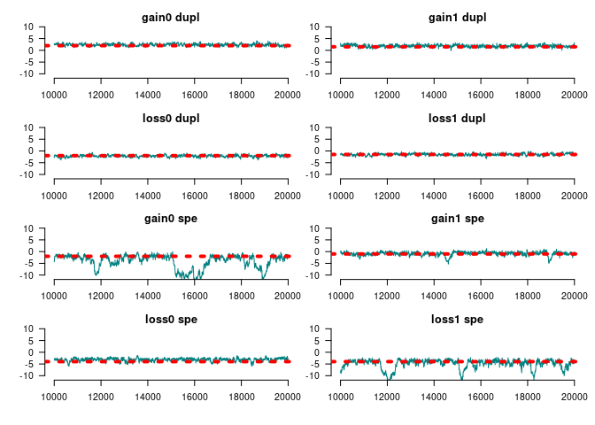

Integrative Methods of Analysis for Genetic Epidemiology
This R package taps into statistical theory primarily developed in social networks. Using Exponential-Family Random Graph Models (ERGMs), geese provides a statistical framework for building Gene Functional Evolution Models using Sufficiency. For example, users can directly hypothesize whether Neofunctionalization or Subfunctionalization events were taking place in a phylogeny, without having to estimate the full transition Markov Matrix that is usually used.
GEESE is computationally efficient, with C++ under the hood, allowing the analyses of either single trees (a GEESE) or multiple trees simultaneously (pooled model) in a Flock.
This is a work in progress and based on the theoretical work developed during George G. Vega Yon’s doctoral thesis.
Installation
The development version from GitHub with:
# install.packages("devtools")
devtools::install_github("USCbiostats/geese")Examples
Simulating annotations (two different sets)
library(geese)
# Preparing data
n <- 100L
annotations <- replicate(n * 2 - 1, c(9, 9), simplify = FALSE)
# Random tree
set.seed(31)
tree <- aphylo::sim_tree(n)$edge - 1L
# Sorting by the second column
tree <- tree[order(tree[, 2]), ]
duplication <- sample.int(
n = 2, size = n * 2 - 1, replace = TRUE, prob = c(.4, .6)
) == 1
# Reading the data in
amodel <- new_geese(
annotations = annotations,
geneid = c(tree[, 2], n),
parent = c(tree[, 1], -1),
duplication = duplication
)
# Preparing the model
term_gains(amodel, 0:1, duplication = 1)
term_loss(amodel, 0:1, duplication = 1)
term_gains(amodel, 0:1, duplication = 0)
term_loss(amodel, 0:1, duplication = 0)
term_maxfuns(amodel, 0, 1, duplication = 2)
init_model(amodel)
#> Initializing nodes in Geese (this could take a while)...
#> ||||||||||||||||||||||||||||||||||||||||||||||||||||||||||||||||||||||||| done.
# Testing
params <- c(
# Gains spe
2, 1.5,
# Loss
-2, -1.5,
# Gains spe
-2, -1,
# Loss spe
-4, -4,
# Max funs
2,
# Root probabilities
-10, -10
)
names(params) <- c(
"gain0 dupl", "gain1 dupl",
"loss0 dupl", "loss1 dupl",
"gain0 spe", "gain1 spe",
"loss0 spe", "loss1 spe",
"onefun",
"root0", "root1"
)
likelihood(amodel, params*1) # Equals 1 b/c all missings
#> [1] 1
# Simulating data
fake1 <- sim_geese(p = amodel, par = params, seed = 212)
fake2 <- sim_geese(p = amodel, par = params)
# Removing interior node data
is_interior <- which(tree[,2] %in% tree[,1])
is_leaf <- which(!tree[,2] %in% tree[,1])
# for (i in is_interior) {
# fake1[[i]] <- rep(9, 2)
# fake2[[i]] <- rep(9, 2)
# }We can now visualize either of the annotations using the aphylo package.
library(aphylo)
#> Loading required package: ape
ap <- aphylo_from_data_frame(
tree = as.phylo(tree),
annotations = data.frame(
id = c(tree[, 2], n),
do.call(rbind, fake1)
)
)
plot(ap)
Model fitting MLE
# Creating the object
# Creating the object
amodel <- new_geese(
annotations = fake1,
geneid = c(tree[, 2], n),
parent = c(tree[, 1],-1),
duplication = duplication
)
# Adding the model terms
term_gains(amodel, 0:1, duplication = 1)
term_loss(amodel, 0:1, duplication = 1)
term_gains(amodel, 0:1, duplication = 0)
term_loss(amodel, 0:1, duplication = 0)
term_maxfuns(amodel, 0, 1, duplication = 2)
init_model(amodel)
#> Initializing nodes in Geese (this could take a while)...
#> ||||||||||||||||||||||||||||||||||||||||||||||||||||||||||||||||||||||||| done.
print(amodel)
#> GEESE
#> INFO ABOUT PHYLOGENY
#> # of functions : 2
#> # of nodes [int; leaf] : [99; 100]
#> # of ann. [zeros; ones] : [83; 117]
#> # of events [dupl; spec] : [43; 56]
#> Largest polytomy : 2
#>
#> INFO ABOUT THE SUPPORT
#> Num. of Arrays : 396
#> Support size : 8
#> Support size range : [10, 10]
#> Transform. Fun. : no
#> Model terms (9) :
#> - Gains 0 at duplication
#> - Gains 1 at duplication
#> - Loss 0 at duplication
#> - Loss 1 at duplication
#> - Gains 0 at speciation
#> - Gains 1 at speciation
#> - Loss 0 at speciation
#> - Loss 1 at speciation
#> - Genes with [0, 1] funs
# Finding MLE
ans_mle <- geese_mle(amodel, hessian = TRUE, ncores = 4)
ans_mle
#> $par
#> [1] 2.327179 1.553591 -1.729575 -1.833682 -1.590516 -1.119200 -3.823851
#> [8] -2.864298 1.982499 -1.465843 4.366549
#>
#> $value
#> [1] -109.7751
#>
#> $counts
#> function gradient
#> 1002 NA
#>
#> $convergence
#> [1] 1
#>
#> $message
#> NULL
#>
#> $hessian
#> [,1] [,2] [,3] [,4] [,5]
#> [1,] -4.206819071 0.5959524394 0.8862856191 -1.721987653 -1.503185e-01
#> [2,] 0.595952439 -5.1501119636 -2.3668333888 2.589829846 2.739261e-02
#> [3,] 0.886285619 -2.3668333888 -6.9892574608 1.273369396 9.894126e-03
#> [4,] -1.721987653 2.5898298457 1.2733693957 -5.950797128 -3.604817e-02
#> [5,] -0.150318497 0.0273926144 0.0098941264 -0.036048174 -1.372080e+00
#> [6,] 0.020065546 -0.0867748664 -0.0605347044 0.373968106 4.557307e-02
#> [7,] 0.238633328 -0.0203662864 -0.2858568173 0.088855117 -5.867635e-02
#> [8,] -0.169421696 0.5298915990 0.1330584389 -0.704884567 2.255319e-01
#> [9,] 2.314439286 4.1601766227 -3.0270645492 -5.257577271 6.883251e-01
#> [10,] -0.020862576 -0.0004507292 -0.0234848407 0.008509284 1.834480e-02
#> [11,] 0.000175195 -0.0036292338 -0.0001882725 -0.003219606 2.817835e-05
#> [,6] [,7] [,8] [,9] [,10]
#> [1,] 0.0200655457 0.238633328 -0.1694216962 2.314439e+00 -2.086258e-02
#> [2,] -0.0867748664 -0.020366286 0.5298915990 4.160177e+00 -4.507292e-04
#> [3,] -0.0605347044 -0.285856817 0.1330584389 -3.027065e+00 -2.348484e-02
#> [4,] 0.3739681063 0.088855117 -0.7048845667 -5.257577e+00 8.509284e-03
#> [5,] 0.0455730742 -0.058676354 0.2255319007 6.883251e-01 1.834480e-02
#> [6,] -1.7555584648 0.187628157 0.5698203367 1.306991e+00 2.208491e-04
#> [7,] 0.1876281566 -1.111934470 0.0777368676 -1.058568e+00 -1.325888e-02
#> [8,] 0.5698203367 0.077736868 -2.5204264773 -2.774906e+00 7.558960e-03
#> [9,] 1.3069908000 -1.058567779 -2.7749056741 -1.941377e+01 -1.233878e-02
#> [10,] 0.0002208491 -0.013258884 0.0075589597 -1.233878e-02 -6.093654e-03
#> [11,] -0.0005919283 -0.000109976 0.0001258655 4.454019e-04 -3.267786e-05
#> [,11]
#> [1,] 1.751950e-04
#> [2,] -3.629234e-03
#> [3,] -1.882725e-04
#> [4,] -3.219606e-03
#> [5,] 2.817835e-05
#> [6,] -5.919283e-04
#> [7,] -1.099760e-04
#> [8,] 1.258655e-04
#> [9,] 4.454019e-04
#> [10,] -3.267786e-05
#> [11,] -9.352519e-04
# Prob of each gene gaining a single function
transition_prob(
amodel,
params = rep(0, nterms(amodel) - nfuns(amodel)),
duplication = TRUE, state = c(FALSE, FALSE),
array = matrix(c(1, 0, 0, 1), ncol=2)
)
#> [1] 0.0625Model fitting MCMC
set.seed(122)
ans_mcmc <- geese_mcmc(
amodel,
nsteps = 20000,
kernel = fmcmc::kernel_ram(warmup = 5000),
prior = function(p) c(
dlogis(
p,
scale = 4,
location = c(
rep(0, nterms(amodel) - nfuns(amodel)),
rep(-5, nfuns(amodel))
),
log = TRUE
)
), ncores = 1L)We can take a look at the results like this:


#>
#> Iterations = 15000:20000
#> Thinning interval = 1
#> Number of chains = 1
#> Sample size per chain = 5001
#>
#> 1. Empirical mean and standard deviation for each variable,
#> plus standard error of the mean:
#>
#> Mean SD Naive SE Time-series SE
#> Gains 0 at duplication 2.9015 0.8051 0.011385 0.09034
#> Gains 1 at duplication 1.6914 0.5653 0.007994 0.04934
#> Loss 0 at duplication -2.0287 0.5349 0.007563 0.05280
#> Loss 1 at duplication -1.8866 0.6442 0.009110 0.08533
#> Gains 0 at speciation -12.1932 3.5435 0.050107 1.15176
#> Gains 1 at speciation -0.1454 0.6609 0.009345 0.06815
#> Loss 0 at speciation -2.9909 0.5184 0.007331 0.04458
#> Loss 1 at speciation -5.1655 1.9408 0.027444 0.39515
#> Genes with [0, 1] funs 2.2578 0.4569 0.006461 0.06265
#> Root 1 -1.0470 3.0807 0.043564 0.94842
#> Root 2 -4.2756 4.2474 0.060061 1.59284
#>
#> 2. Quantiles for each variable:
#>
#> 2.5% 25% 50% 75% 97.5%
#> Gains 0 at duplication 1.4054 2.3030 2.8777 3.4337 4.5624
#> Gains 1 at duplication 0.5451 1.3327 1.7001 2.0905 2.7559
#> Loss 0 at duplication -3.0657 -2.3764 -2.0460 -1.6762 -0.9765
#> Loss 1 at duplication -3.1944 -2.3389 -1.8797 -1.4119 -0.6868
#> Gains 0 at speciation -18.2113 -14.9130 -12.1597 -10.1648 -3.6030
#> Gains 1 at speciation -1.5472 -0.5998 -0.1365 0.3416 1.0736
#> Loss 0 at speciation -4.0181 -3.3470 -2.9738 -2.6539 -2.0354
#> Loss 1 at speciation -9.4815 -6.5157 -4.8115 -3.6121 -2.3045
#> Genes with [0, 1] funs 1.4263 1.9483 2.2481 2.5599 3.2238
#> Root 1 -5.9435 -3.5719 -1.4757 1.4858 4.7924
#> Root 2 -14.2253 -5.9892 -3.8179 -1.5920 3.3555
par_estimates <- colMeans(
window(ans_mcmc, start = end(ans_mcmc)*3/4)
)
ans_pred <- predict_geese(
amodel, par_estimates,
leave_one_out = TRUE,
only_annotated = TRUE
) |> do.call(what = "rbind")
# Preparing annotations
ann_obs <- do.call(rbind, fake1)
# AUC
(ans <- prediction_score(ans_pred, ann_obs))
#> Prediction score (H0: Observed = Random)
#>
#> N obs. : 199
#> alpha(0, 1) : 0.40, 0.60
#> Observed : 0.68 ***
#> Random : 0.52
#> P(<t) : 0.0000
#> --------------------------------------------------------------------------------
#> Values scaled to range between 0 and 1, 1 being best.
#>
#> Significance levels: *** p < .01, ** p < .05, * p < .10
#> AUC 0.80.
#> MAE 0.32.
plot(ans$auc, xlim = c(0,1), ylim = c(0,1))
Using a flock
GEESE models can be grouped (pooled) into a flock.
flock <- new_flock()
# Adding first set of annotations
add_geese(
flock,
annotations = fake1,
geneid = c(tree[, 2], n),
parent = c(tree[, 1],-1),
duplication = duplication
)
# Now the second set
add_geese(
flock,
annotations = fake2,
geneid = c(tree[, 2], n),
parent = c(tree[, 1],-1),
duplication = duplication
)
# Persistence to preserve parent state
term_gains(flock, 0:1, duplication = 1)
term_loss(flock, 0:1, duplication = 1)
term_gains(flock, 0:1, duplication = 0)
term_loss(flock, 0:1, duplication = 0)
term_maxfuns(flock, 0, 1, duplication = 2)
# We need to initialize to do all the accountintg
init_model(flock)
#> Initializing nodes in Flock (this could take a while)...
#> ||||||||||||||||||||||||||||||||||||||||||||||||||||||||||||||||||||||||| done.
print(flock)
#> FLOCK (GROUP OF GEESE)
#> INFO ABOUT THE PHYLOGENIES
#> # of phylogenies : 2
#> # of functions : 2
#> # of ann. [zeros; ones] : [165; 235]
#> # of events [dupl; spec] : [86; 112]
#> Largest polytomy : 2
#>
#> INFO ABOUT THE SUPPORT
#> Num. of Arrays : 792
#> Support size : 8
#> Support size range : [10, 10]
#> Transform. Fun. : no
#> Model terms (9) :
#> - Gains 0 at duplication
#> - Gains 1 at duplication
#> - Loss 0 at duplication
#> - Loss 1 at duplication
#> - Gains 0 at speciation
#> - Gains 1 at speciation
#> - Loss 0 at speciation
#> - Loss 1 at speciation
#> - Genes with [0, 1] funsWe can use the same program to fit the MCMC
set.seed(122)
ans_mcmc2 <- geese_mcmc(
flock,
nsteps = 20000,
kernel = fmcmc::kernel_ram(warmup = 2000),
prior = function(p) dlogis(p, scale = 2, log = TRUE)
)
op <- par(
mfrow = c(4, 2), #tcl=.5,
las=1, mar = c(3,3,1,0),
bty = "n", oma = rep(1,4)
)
for (i in 1:ncol(ans_mcmc2)) {
tmpx <- window(ans_mcmc2, start = 10000)[,i,drop=FALSE]
coda::traceplot(
tmpx, smooth = FALSE, ylim = c(-11,11), col = rgb(0, 128, 128, maxColorValue = 255),
main = names(params)[i]
)
abline(h = params[i], lty=3, lwd=4, col = "red")
}
par(op)
summary(window(ans_mcmc2, start = 10000))
#>
#> Iterations = 10000:20000
#> Thinning interval = 1
#> Number of chains = 1
#> Sample size per chain = 10001
#>
#> 1. Empirical mean and standard deviation for each variable,
#> plus standard error of the mean:
#>
#> Mean SD Naive SE Time-series SE
#> Gains 0 at duplication 2.39204 0.4707 0.004707 0.03019
#> Gains 1 at duplication 1.85804 0.4925 0.004925 0.02789
#> Loss 0 at duplication -2.15114 0.4451 0.004451 0.03310
#> Loss 1 at duplication -1.50477 0.4427 0.004427 0.03176
#> Gains 0 at speciation -4.10744 2.9954 0.029952 0.76564
#> Gains 1 at speciation -0.84969 0.8242 0.008241 0.09520
#> Loss 0 at speciation -3.16554 0.6535 0.006535 0.05307
#> Loss 1 at speciation -4.88115 2.0161 0.020160 0.32971
#> Genes with [0, 1] funs 2.09933 0.3703 0.003702 0.02921
#> Root 1 0.02501 2.6487 0.026486 0.45210
#> Root 2 -1.07238 2.9197 0.029195 0.56841
#>
#> 2. Quantiles for each variable:
#>
#> 2.5% 25% 50% 75% 97.5%
#> Gains 0 at duplication 1.5050 2.068 2.37614 2.7239 3.3368
#> Gains 1 at duplication 0.9237 1.511 1.84256 2.2029 2.8299
#> Loss 0 at duplication -3.0413 -2.451 -2.14564 -1.8533 -1.2836
#> Loss 1 at duplication -2.3961 -1.809 -1.51894 -1.1984 -0.6178
#> Gains 0 at speciation -11.2547 -5.414 -2.91312 -1.9486 -0.9131
#> Gains 1 at speciation -3.2320 -1.183 -0.72227 -0.3283 0.3280
#> Loss 0 at speciation -4.7209 -3.510 -3.08984 -2.7347 -2.0557
#> Loss 1 at speciation -10.5227 -5.326 -4.19469 -3.5823 -2.7532
#> Genes with [0, 1] funs 1.3738 1.842 2.07762 2.3515 2.8303
#> Root 1 -4.7967 -1.873 -0.04377 1.5864 6.0565
#> Root 2 -6.5355 -3.147 -1.08668 1.1586 4.6030Are we doing better in AUCs?
par_estimates <- colMeans(
window(ans_mcmc2, start = end(ans_mcmc2)*3/4)
)
ans_pred <- predict_flock(
flock, par_estimates,
leave_one_out = TRUE,
only_annotated = TRUE
) |>
lapply(do.call, what = "rbind") |>
do.call(what = rbind)
# Preparing annotations
ann_obs <- rbind(
do.call(rbind, fake1),
do.call(rbind, fake2)
)
# AUC
(ans <- prediction_score(ans_pred, ann_obs))
#> Prediction score (H0: Observed = Random)
#>
#> N obs. : 398
#> alpha(0, 1) : 0.42, 0.58
#> Observed : 0.72 ***
#> Random : 0.51
#> P(<t) : 0.0000
#> --------------------------------------------------------------------------------
#> Values scaled to range between 0 and 1, 1 being best.
#>
#> Significance levels: *** p < .01, ** p < .05, * p < .10
#> AUC 0.86.
#> MAE 0.28.
plot(ans$auc)Limiting the support
In this example, we use the function rule_limit_changes() to apply a constraint to the support of the model. This takes the first two terms (0 and 1 since the index is in C++) and restricts the support to states where there are between [0,2] changes, at most.
This should be useful when dealing with multiple functions or pylotomies.
# Creating the object
amodel_limited <- new_geese(
annotations = fake1,
geneid = c(tree[, 2], n),
parent = c(tree[, 1],-1),
duplication = duplication
)
# Adding the model terms
term_gains(amodel_limited, 0:1)
term_loss(amodel_limited, 0:1)
term_maxfuns(amodel_limited, 1, 1)
term_overall_changes(amodel_limited, TRUE)
# At most one gain
rule_limit_changes(amodel_limited, 5, 0, 2)
# We need to initialize to do all the accounting
init_model(amodel_limited)
#> Initializing nodes in Geese (this could take a while)...
#> ||||||||||||||||||||||||||||||||||||||||||||||||||||||||||||||||||||||||| done.
# Is limiting the support any useful?
support_size(amodel_limited)
#> [1] 224Since we added the constraint based on the term term_overall_changes(), we now need to fix the parameter at 0 (i.e., no effect) during the MCMC model:
set.seed(122)
ans_mcmc2 <- geese_mcmc(
amodel_limited,
nsteps = 20000,
kernel = fmcmc::kernel_ram(
warmup = 2000,
fixed = c(FALSE, FALSE, FALSE, FALSE, FALSE, TRUE, FALSE, FALSE)
),
prior = function(p) dlogis(p, scale = 2, log = TRUE)
)
#>
#> Iterations = 15000:20000
#> Thinning interval = 1
#> Number of chains = 1
#> Sample size per chain = 5001
#>
#> 1. Empirical mean and standard deviation for each variable,
#> plus standard error of the mean:
#>
#> Mean SD Naive SE Time-series SE
#> Gains 0 at duplication 1.06329 0.8555 0.012097 0.06474
#> Gains 1 at duplication 1.00857 0.7727 0.010927 0.04945
#> Loss 0 at duplication -1.44630 0.7529 0.010647 0.05664
#> Loss 1 at duplication -0.65287 0.7342 0.010383 0.04529
#> Genes with [1, 1] funs at duplication 1.04183 0.3736 0.005283 0.02301
#> Overall changes at duplication 0.00000 0.0000 0.000000 0.00000
#> Root 1 -0.05519 3.1452 0.044476 0.35121
#> Root 2 -0.20215 3.2415 0.045837 0.41755
#>
#> 2. Quantiles for each variable:
#>
#> 2.5% 25% 50% 75% 97.5%
#> Gains 0 at duplication -0.5104 0.5096 1.07974 1.5870 2.75348
#> Gains 1 at duplication -0.3511 0.4883 0.97593 1.4741 2.72087
#> Loss 0 at duplication -3.0046 -1.9420 -1.39766 -0.9289 -0.05484
#> Loss 1 at duplication -2.0463 -1.1631 -0.65509 -0.2187 0.87313
#> Genes with [1, 1] funs at duplication 0.3743 0.7911 1.01242 1.2674 1.88310
#> Overall changes at duplication 0.0000 0.0000 0.00000 0.0000 0.00000
#> Root 1 -6.4868 -2.1595 0.08435 2.1941 5.72248
#> Root 2 -6.6845 -2.0668 -0.14747 1.7791 6.08394Code of Conduct
Please note that the aphylo2 project is released with a Contributor Code of Conduct. By contributing to this project, you agree to abide by its terms.